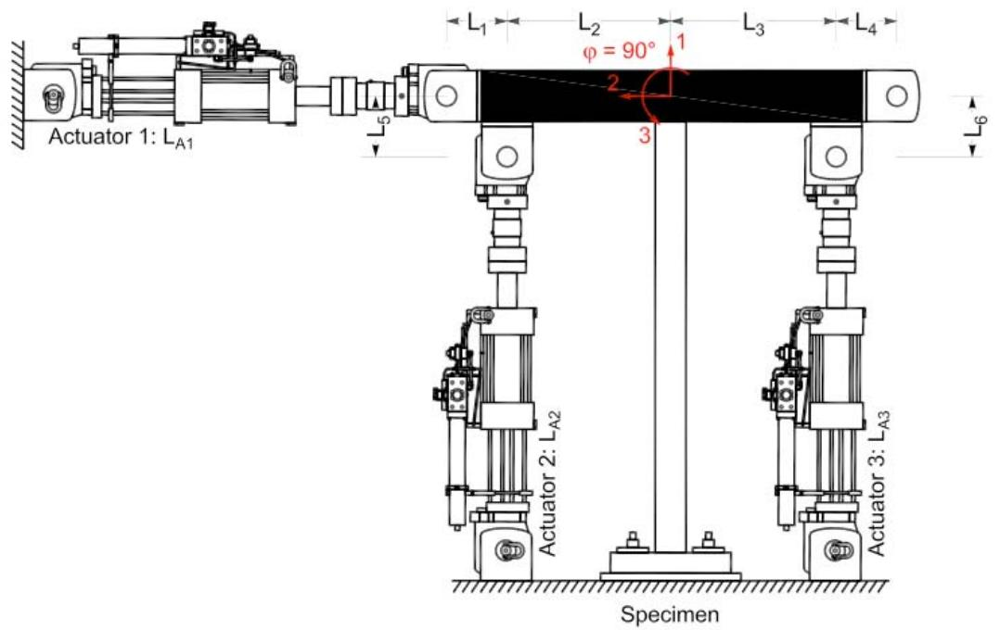
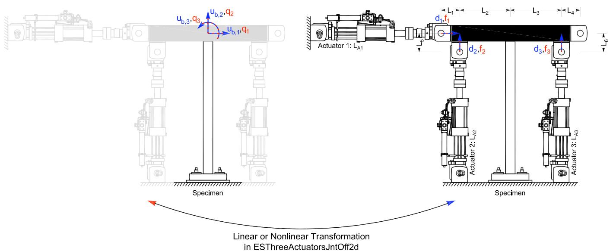

4.9. ThreeActuatorsJntOff 实验装置
此命令用于构造 ThreeActuatorsJntOff 实验装置对象。此实验装置由三个作动器组成，控制试件的两个平移和旋转自由度。它考虑了作动器之间的刚性节点偏移。
4.9.1. 命令
ThreeActuatorsJntOff 3d
expSetup ThreeActuatorsJntOff tag <-control ctrlTag> dofH dofV dofR sizeTrial sizeOut La1 La2 La3 L1 L2 L3 L4 L5 L6 L7 <-nlGeom> <-posAct1 pos>
新增的命令，暂无解释。以前的命令ThreeActuatorsJntOff实际上变成是ThreeActuatorsJntOff2d ThreeActuatorsJntOff 2d
expSetup ThreeActuatorsJntOff2d $tag <-control $ctrlTag> $La1 $La2 $La3 $L1 $L2 $L3 $L4 $L5 $L6 <-nlGeom> <-posAct1 $pos> <-phiLocX $phi> <-trialDispFact $f> <-trialVelFact $f> <-trialAccelFact $f> <-trialForceFact $f> <-trialTimeFact $f> <-outDispFact $f> <-outVelFact $f> <-outAccelFact $f> <-outForceFact $f> <-outTimeFact $f>
参数 |
说明 |
|---|---|
$tag |
唯一装置标签 |
$ctrlTag |
先前定义的控制对象的标签（可选） |
$La1 |
作动器 1 的长度 |
$La2 |
作动器 2 的长度 |
$La3 |
作动器 3 的长度 |
$L1 |
刚性连杆 1 的长度 |
$L2 |
刚性连杆 2 的长度 |
$L3 |
刚性连杆 3 的长度 |
$L4 |
刚性连杆 4 的长度 |
$L5 |
刚性连杆 5 的长度 |
$L6 |
刚性连杆 6 的长度 |
-nlGeom |
非线性几何（可选，默认值 = false） |
$pos |
作动器 1 的位置，左或右（l 或 r）（可选，默认值 = 左） |
$phi |
从刚性加载梁到局部 x 轴的角度 [度]（可选，默认值 = 0.0） |
$f |
在变换之前应用于试（<-ctrl....Fact \(f>）和采集（<-out....Fact \)f>）数据的因子（可选，默认值 = 1.0） |
4.9.2. 示例
# Define experimental control
# expControl SimUniaxialMaterials $tag $matTags
expControl SimUniaxialMaterials 1 1 2 3
# Define experimental setup
expSetup ThreeActuatorsJntOff2d 1 -control 1 60 72 72 24 60 60 24 12 12 -philLocX 90
上述 ThreeActuatorsJntOff2d 实验装置命令使用先前定义的 SimUniaxialMaterials 实验控制对象。作动器 1、2 和 3 的长度分别为 60、72 和 72。刚性加载梁的总长度为 120（\(L_2 = 60\) 和 \(L_3 = 60\)）。偏移量 \(L_1\)、\(L4\)、\(L5\) 和 \(L_6\) 的长度分别为 24、24、12 和 12。作动器 1 位于梁的左侧。局部 1 轴从刚性加载梁旋转 90 度（逆时针）。

图 27：ThreeActuatorsJntOff2d 实验装置
图 28：ThreeActuatorsJntOff2d 实验装置中的变换